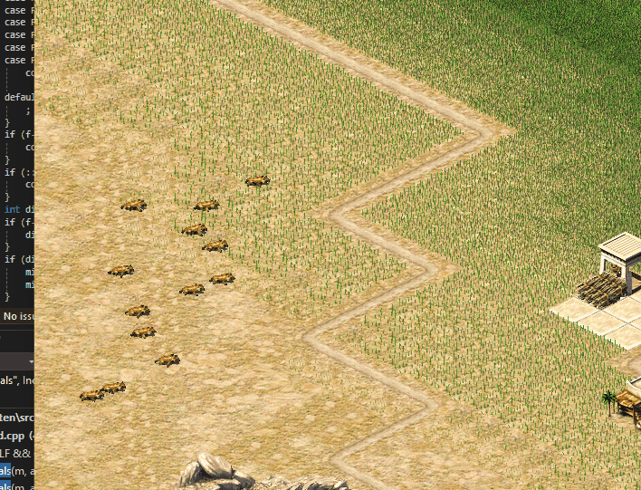
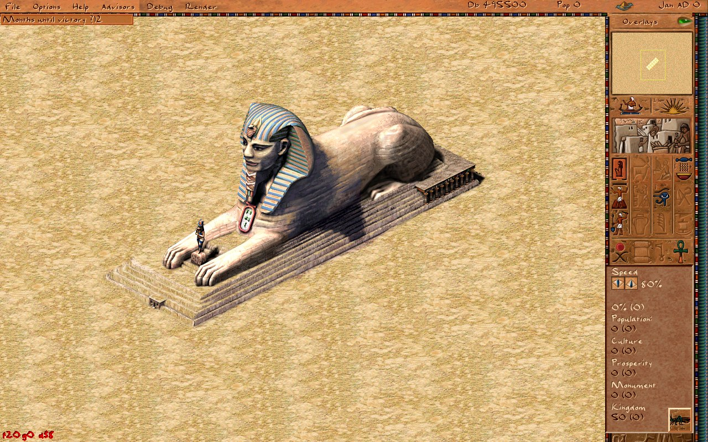

Akhenaten RA 0.29 — Five Months of Original Pharaoh Logic
RA 0.29 is out. Since RA 0.27 on June 14, 2026 the project has landed about 1,600 commits. RA 0.27 was the script migration wave. This release is mostly about parity: walkers, animals, plagues, monuments and mission events were ported from the original game's logic one by one and checked against it, replacing behaviour that used to be a remake approximation.
This post covers what changed for players, what changed under the hood, and how the test suite grew from 15 files to 549 along the way.
The Big Theme: Original Behaviour by Default
Every game feature flag now carries its original-game value next to its default, and the default profile is the original Pharaoh behaviour. Remake changes that used to be on silently (one-walker shortcuts, service caps, toothache, nearest-fort recruiting, random statue variants and many more) are now Enhanced options. Two new command-line flags pick a profile: --og forces original behaviour everywhere and --enhanced turns every Enhanced feature on.
The porting itself followed one pattern for each figure or building: read the original routine, rewrite ours to match it (action ids, timers, spawn delays, model costs, risks), keep any remake behaviour behind a flag, and add an integral test that drives the real game through the cycle.
Walkers and services
- Figure type ids 0–109 now match the original, including legion types and the Egyptian enemy warship and transport (100 and 101), so figure types in saves line up with Pharaoh
- Immigrants, emigrants, homeless, patricians, priests, the festival priest and its celebrants, physicians, dentists, apothecaries, embalmers, teachers, librarians, tax collectors and architects follow their original spawn delays, routes and coverage
- Constable and magistrate share the original law-walker state machine; police stations no longer need weapons unless the Enhanced option is on
- Market buyers make original multi-stop trips with separate food and goods lists; granaries run two carts and the original Get/Empty rules; dockers haul four loads with the original import and export checks
- Thieves, tomb robbers, firemen at a fire, water carriers and the ferry boarding of carts, caravans and delivery boys follow the original rules
- Zookeeper walks and serves as an original entertainer; tomb artisans pick chamber work in building order and use the original ghost worker
- Corpses last 128 ticks for every figure type, as in the original, instead of 43 to 500 depending on the type

Animals, predators and plagues
- Hyena, crocodile and hippo run their original predator state machines
- Asp, lion and scorpion share one predator base ported from the original wild-predator action: herd spawn, idle cycle, hunt and death
- Ostriches, antelopes and birds use the original herd cycle; herd homes stay put; animals and hunters route over the same grid as in the original
- Frog plague: frogs come out of the water and walk to the houses; locusts wait for the flood, then fly in strips with the original hit points
- Mummies rise at a tomb or temple and on their victims
- Plagued citizens carry disease as in the original and are cured on a shared tile; they and the plague figures show on the disease and problems overlays
Invasions and the military
- Enemy formations update twice a day with a daily morale check, choose targets and land and sea points as the original does, and can break through buildings
- Enemy warships and transports launch, patrol, ram, land troops and escape by the original rules; player warships and transports, the shipwright and the fleet advisor were ported too
- Bedouin raids now send the original Bedouin infantry
- Mission raids in every mission that has them (Thinis, Waset, Kebet, Itjtawy, Iken, Khmun, Sumur, Qadesh, Rowarty, Abu Simbel, Pi-Yer, Actium, Migdol, Tanis, Maritis, the Alexandria missions and more) run on the shared original invasion cycle: announcement, reminders at 24/12/6/1 months, then the attack
- The Kingdom's army comes at a Kingdom rating of 0, as in the original; recruiting needs weapons and chariots in stock and fort costs come from the original model
- Towers, gatehouses, sentries, ballistas, javelins, arrows and enemy missiles use the original aim, reload and damage formulas
Economy, city life and events
- House evolution checks the magistrate, uses the second luxury kind, the two-day devolve delay, and the original food and goods consumption
- Workshop output, raw material rates, fire and collapse risk, ruins and fire spread follow the original numbers; the jeweler, lamp maker, paint maker, chariot maker and cattle ranch use their original production cycles
- Farms: original soil depletion after a flood harvest, curse countdown, minimum growth and a 3×3 irrigation check (5×5 is an Enhanced option); canals and water lifts use the original water supply
- Prosperity, culture and Kingdom favour ratings, taxes, wages and the monument rating curve follow the original formulas; mission monument goals came out right again once they did
- Original troop and goods requests, gifts from Pharaoh (Accept / Later / Refuse), earthquakes, hailstorms, the river of blood, better and worse floods, and the original victory time limit, defeat popup and highscores
- Construction warnings were compared against the original table and ported: road access, workers, raw materials, two-input workshops and service buildings
- Walker phrases use the original rules for picking the city's main problem; figure info windows got the original “tell me more” buttons
Monuments
Most monuments were rebuilt from the original part layouts, stages and work spots, and the Cleopatra ones became playable for the first time.

- Pyramids — mudbrick, stepped, bent and true pyramids run on the original block engine, with carpenter ramps, the original casing figures and the large 16×16 sizes; stepped and mudbrick pyramid complexes and the grand stepped complex can be built
- Mastabas — original bricklayer block engine; the large 8×18 mastaba is playable
- Sphinx — three parts along one axis, 16 stages and 22 work spots, as described in How to build a sphinx
- Obelisks — small and large, with stage-by-stage mason and carpenter work
- Royal tombs — small to grand, with the original part chain, chamber stages and lamp economy; artisans come from the Artisans' Guild
- Abu Simbel — the original sixteen-record layout on monument rock with 56 work stages and the original info window
- Pharos lighthouse — the original tower and land part, stages, work spots and marble sleds
- Sun temple (100 parts), Mausoleum (116 parts, plus a fix for its sandstone blocks), Alexandria library (25 parts) and Caesareum (9 parts, 19 stages)
- Sled trains carry every pyramid load from the yard with the original images, follow rules and ferry crossings; sled pullers can be attacked, and burial provisions are dispatched to finished tombs
Missions and Campaign
- Campaign maps ship with the game under
data/maps, and the missions from Serabit Khadim through the Cleopatra capital missions (up to 52) have scripts, events and empire maps taken from the original mission data - Request chains, favour invasions, burial provisions, fishing points and herds are defined per mission in script
- Campaign carry-over of troops, monuments and dynasty savings
- Free Play in the main menu lists every scripted mission without dynasty progress
- Ironwill mode blocks mid-game save, load and autosave
- Original Pharaoh
.savfiles (version 160) can be read and loaded on top of their mission: map grids, buildings, city state, formations and event progress carry over; walkers do not yet
UI and Quality of Life
- In-game updater on Windows, Linux and macOS: checks, downloads and swaps the build without a separate helper (CI builds only; off with
--no-update) - Pharaoh data from the installer: the game can unpack a GOG/Inno
Setup.exethrough innoextract, with a progress bar (--extract-installer) - Empire map moved to script, pans with the left mouse button, and draws routes, invasion and troop markers as the original does
- F5/F9 quicksave, monthly autosave rotation (Enhanced), live minimap preview in scenario selection
- Interface scale controls, zoom fixes (100% stays reachable, no tile seams), Alt shows recorded delivery and patrol trails
- Bug report window attaches a screenshot, recent errors and a session log tail
- Sound: effects from the original effect tables, battle music and the
music.txtplaylist, original city ambience rules - Info windows, advisors, the top menu and the hotkey editor finished moving to script; every UI click now goes through script event handlers
Scenario Editor and Modding
The editor gained a seeded procedural map generator, the original 40 map flags (prey herds, disembark and sea invasion points among them), and stores requests, invasions, prices and win criteria in a *.meta.js file next to the map. Mods can be plain folders, keep a fixed id order with one conflict rule for scripts and sounds, and a broken mod script is dropped instead of stopping all scripts. Saves record which mods were active and offer to switch to them on load. --mods PATH points at a mods folder, and an unpacked Scripts/ folder is only used when it was unpacked for the running build.
Platforms and Distribution
- Flathub — Akhenaten is packaged as
io.github.dalerank.Akhenaten. Issue #685 (the menu entry stopped with “engine data files are missing”) is fixed: engine data is now also found next to the executable, the wrapper script is gone, and the sandbox can see/run/mediafor Steam libraries on a Steam Deck SD card. The fix was checked on a Steam Deck with a Flatpak built from it, started the same way as the menu entry - Windows — direct3d11 is the default renderer, with a fallback chain to OpenGL, Direct3D 9 and software; the app icon is embedded for the taskbar
- Rendering — the residency atlas is on by default and faded sprites share one premultiplied blend mode, so more of a frame batches into fewer draw calls
- Linux and macOS — build and startup fixes, case-insensitive paths, curl built against OpenSSL on macOS
- Android — engine data in the APK, landscape lock, saves and touch building restored, native MP3 decoding, soft-keyboard fixes
- Browser — mission maps embedded so Free Play works in the web build
Localization: Hungarian was added, Italian completed, Spanish got a bitmap font and a full set of files, and non-English TTF rendering now matches the original bitmaps.
Under the Hood: Tests and Load Times
The integral test suite grew from 15 files at RA 0.27 to 549. Most of the porting work above landed together with a test that drives the real game, and a regression test has to be seen failing on the old code first. Tests check save round trips and the state hash of drawn frames against headless ticks, and fail when they write to building or figure record 0.
Run one after another, the suite took about an hour. Now the executable starts its own shards (--integraltest-jobs N), each test writes a result file, and the runner collects failures and the slowest tests into a summary. Tests save and load in memory instead of writing files, and CI runs one shard per core, which brings the whole suite to about 75 seconds.
Map and mission loading got faster in the process. Clay, moisture and the six ore and stone grids used to compare every land tile with every water or rock tile; they are now computed from one distance pass over the map, which cuts about 3–4 seconds from each mission load, with identical grids on all 53 campaign missions.
Other gates: the include-layer check (core < grid < sim < presentation < app) was rewritten in C++, so the project no longer needs Python; a config-key gate fails on C++ defaults silently zeroed by a missing script key; building records that overflow their save slot are an error. Drawing no longer writes simulation state, sprite animations tick with the simulation, and our own random rolls no longer touch the original random stream.
Download
RA 0.29 (version 0.2.9) is available from GitHub Releases, itch.io and Flathub. The save format moved forward several versions in this release; report saves that do not load on GitHub or Discord.
Thank you to everyone who filed bugs, sent PRs and playtested nightly builds — especially sirkalmi, Joe Malott, Genroa, Agustin Pre, viidix, Alberto Tudela, Chase Shields and Ivan Anisimov.